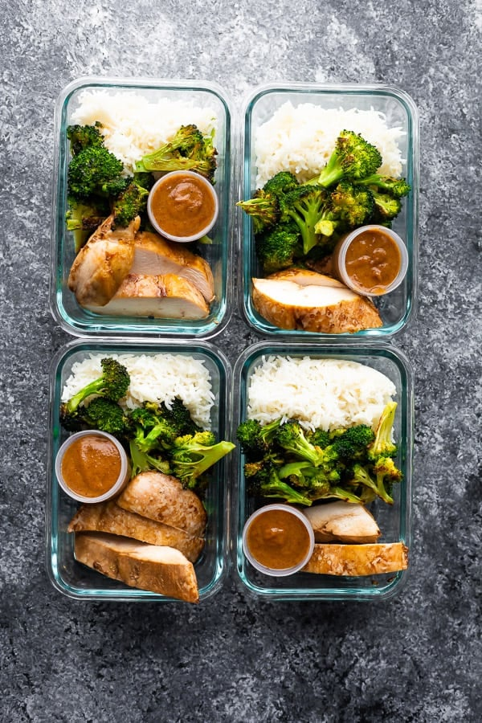

Description
Thai chicken lunch bowls have roasted vegetables and chicken served over rice with a tangy homemade peanut sauce. Easy to prep and keeps well for four days!
Ingredients
- fragrant rice
- boneless skinless chicken breasts
- broccoli
- peanut sauce
Steps
- Cook rice according to package directions. Set aside to cool slightly before dividing between four meal prep containers.
- Pre-heat oven to 425°F.
- Place the chicken in a small baking pan and drizzle in olive oil and soy sauce. Turn to coat.
- Toss the vegetables in olive oil and arrange on a large baking sheet.
- Place chicken and vegetables in the oven together.Bake the chicken for 25 minutes total or until an internal temperature of 165°F is reached, turning once halfway through the cook time.
- Bake the vegetables for 15-20 minutes, until softened and cooked through. While chicken + veggies are baking, shake together peanut sauce ingredients. Portion out into condiment containers if you have them (if not you can drizzle over everything)
- Divide chicken + veggies between the meal prep containers, and place a serving of peanut sauce on or with the container.